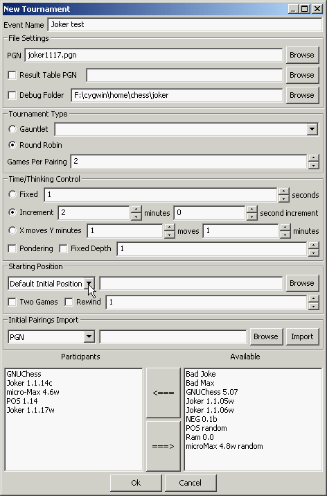
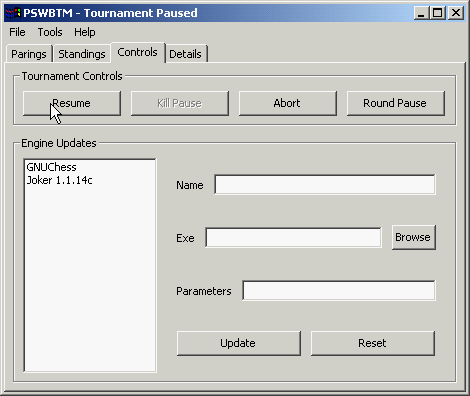

The WinBoard Gold Pack 4.4.0
For the ultimate WinBoard experience!

The WinBoard Gold Pack 4.4.0For the ultimate WinBoard experience! |
|
The first two step for using PSWBTM, configuring it, and instaling some engines into its database, have been described on an earlier page of this tutorial. In the WinBoard Gold Pack PSWBTM comes fully configured, with two engines pre-installed, so for a first trial these steps can be skipped.
The third step in using PSWBTM is to set up a tournament. For this you select the "Tools -> New Tournament" menu item. This pops up a complex window with lot of controls and input fields. Here you have to provide all details about the tournament. But don't despair: most of the time you only change a few of these fields, and leave all others as they were for your last tournament. It is thus not as bad as it looks!
We will start at the top and work our way down. You can give a name to your tourney, wich will appear in the PGN headers of all games. This is optional. The next line you will have to enter the name of a PGN file, to which all games of the tourney will then be added. You thus can select an existing file, and to this end there is a "Browse" button, to spare you typing the name. The other two lines of the "File Settings" panel are not important now; we skip them, making sure the checkboxes in front of them are unchecked.
The fields of the next panel, "Tournament Type", are essential. You have to choose between Gauntlet and Round-Robin with the radio-buttons on the left. If you have selected "Gauntlet", (meaning a single engine against one or more others), it is essential that you select the engine that has to play the gauntlet with the combo-box. This combo box shows you (when you open it) the same list of engines you saw in the engine-manager window. Just select one by clicking it. For a Round-Robin this field is ignored. So for now, click "Round-Robin". You then must specify how many times the engines will have to play each other (usually 1 or 2 times, we select 2).
Then you have to select the time control for the tourney. The panel is more or less self-explanatory, and supports all time controls known by WinBoard, including fixed time or fixed depth. You can also select here if the engines will ponder or not. To make for a few quick games, select "incremental", with 1 min + 0 sec/move.
Then you have to select the starting position. The default starting position will do for now, and in that case all other data in the panel is ignored. But the combo-box on the left also allows you to select to play from positions given in a PGN or FEN file. If you select that, you will have to give the corresponding file name in the field right of it, or browse to such a file. In that case you will also have to tick if you want to play each position once, or twice (with reversed colors).
The "Initial Pairing Import" panel can be ignored.
The last, but most important task, is to select the participants to the tourney. As only two engines are installed initially, we need both of them to participate. Just double-click them in the list on the right (which is again a display of the engine-manager database), and this will transfer them to the box on the left (which shows the participants). Once both engines are in, the tourney is fully specified, and we can click "OK" to quit the tournament-setup window. (As long as the tournament is not started, you can call up the "New Tournment" dialog again to correct possible errors.)
This brings us back into the PSWBTM main window. The four tabs now all contain some information. The first one shows the pairings for every round. (With only two participants, te tourney will finish in single round, though.) The fourth shows an overview of all the settings for the tourney, which you just entered. So you can check there if you goofed. The fourth and final step, however, is to go to the "Control" tab. That is where the buttons are located that allow you to start the tourney, abort it permanently, or pause it (immediately, or after finishing the game in progress). The only confusing thing is that to start the tourney, you have to press "Resume". (The button is named this way because the same button is used to restart after a pause.) After that, the tournament will start, and run automatically to completion. While it is running you can use the PSWBTM "Standings" tab sheet to see how the participants are doing upto now. And watch and enjoy the games, of course. WinBoard will pop up as you left it last time, but noting you change now (including the size and position of all its windows) will be remembered for the next game of the tourney.
After two games our small round-robin will be finished. The games will have been saved in the PGN file you selected.
Congratulations! You now have played your first tournament with PSWBTM + WinBoard. That is all there is to it. Now just install some more engines, and you are in business!